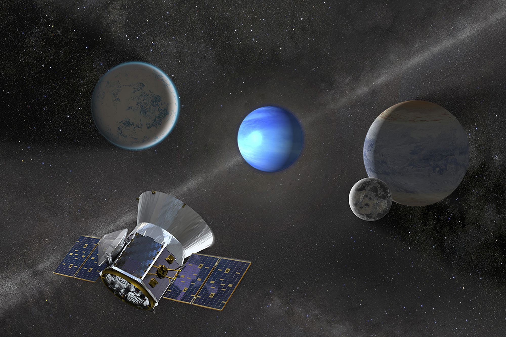

Tin nổi bật
TESS của NASA quay trở lại hoạt động khoa học

M A - H
TESS (Vệ tinh Khảo sát Ngoại hành tinh Quá cảnh) của NASA đã quay trở lại hoạt động khoa học vào ngày 3 tháng 5 và một lần nữa thực hiện các quan sát. Vệ tinh chuyển sang chế độ an toàn vào ngày 23 tháng 4 sau một khoảng thời gian ngừng hoạt động riêng biệt vào đầu tháng đó.

Nhóm vận hành xác định chế độ an toàn mới nhất này được kích hoạt do không giải phóng đúng động lượng từ các bánh xe phản ứng của tàu vũ trụ, một hoạt động thường ngày cần thiết để giữ cho vệ tinh được định hướng chính xác khi thực hiện quan sát. Hệ thống đẩy, cho phép truyền động lượng này, đã không được điều áp lại thành công sau sự kiện ở chế độ an toàn trước đó vào ngày 8 tháng 4. Nhóm đã khắc phục điều này, cho phép sứ mệnh quay trở lại hoạt động khoa học bình thường. Nguyên nhân của sự kiện chế độ an toàn ngày 8 tháng 4 vẫn đang được điều tra.
Nhiệm vụ TESS là một Nhà thám hiểm Vật lý Thiên văn của NASA do Viện Công nghệ Massachusetts ở Cambridge, Massachusetts vận hành. Ra mắt vào năm 2018, TESS đã quét gần như toàn bộ bầu trời để tìm kiếm các hành tinh ngoài hệ mặt trời của chúng ta, được gọi là ngoại hành tinh . Nhiệm vụ TESS cũng đã phát hiện ra các hiện tượng vũ trụ khác, bao gồm các lỗ đen xé nhỏ ngôi sao và các dao động của sao . Đọc thêm về những khám phá TESS tại nasa.gov/tess .
Vệ tinh săn tìm hành tinh của NASA tạm dừng
Trong hoạt động thường lệ vào ngày 23 tháng 4, TESS (Vệ tinh Khảo sát Ngoại hành tinh) của NASA đã chuyển sang chế độ an toàn, tạm thời đình chỉ các hoạt động khoa học. Vệ tinh quét bầu trời để tìm kiếm các hành tinh ngoài hệ mặt trời của chúng ta.
Nhóm đang nỗ lực khôi phục vệ tinh trở lại hoạt động khoa học trong khi điều tra nguyên nhân cơ bản. NASA cũng tiếp tục điều tra nguyên nhân của một sự kiện ở chế độ an toàn riêng biệt diễn ra vào đầu tháng này, bao gồm cả việc liệu hai sự kiện này có liên quan đến nhau hay không. Bản thân tàu vũ trụ vẫn ổn định.
Nhiệm vụ TESS là một Nhà thám hiểm Vật lý Thiên văn của NASA do Viện Công nghệ Massachusetts ở Cambridge, Massachusetts vận hành. Ra mắt vào năm 2018, TESS vừa kỷ niệm 6 năm thành lập trên quỹ đạo. Truy cập nasa.gov/tess để biết thông tin cập nhật.
TESS của NASA quay trở lại hoạt động khoa học
TESS (Vệ tinh Khảo sát Ngoại hành tinh) của NASA đã hoạt động trở lại sau khi các hoạt động quan sát khoa học bị đình chỉ vào ngày 8 tháng 4, khi tàu vũ trụ chuyển sang chế độ an toàn. Tất cả các thiết bị đều được bật nguồn và sau khi tải xuống thành công dữ liệu khoa học đã thu thập trước đó được lưu trữ trong máy ghi của sứ mệnh, hiện đang thực hiện các quan sát khoa học mới.
Việc phân tích nguyên nhân khiến vệ tinh chuyển sang chế độ an toàn đang được tiến hành.
Nhiệm vụ TESS là Nhà thám hiểm Vật lý thiên văn của NASA do MIT vận hành ở Cambridge, Massachusetts. Ra mắt vào năm 2018, TESS đã quét gần như toàn bộ bầu trời để tìm kiếm các hành tinh ngoài hệ mặt trời của chúng ta, được gọi là ngoại hành tinh . Nhiệm vụ TESS cũng đã phát hiện ra các hiện tượng vũ trụ khác, bao gồm các lỗ đen xé nhỏ ngôi sao và các dao động của sao . Đọc thêm về những khám phá TESS tại nasa.gov/tess .
TESS của NASA tạm dừng quan sát khoa học
TESS (Vệ tinh Khảo sát Ngoại hành tinh) của NASA đã chuyển sang chế độ an toàn vào ngày 8 tháng 4, tạm thời làm gián đoạn các hoạt động quan sát khoa học. Nhóm đang điều tra nguyên nhân cốt lõi của chế độ an toàn xảy ra trong các hoạt động kỹ thuật theo lịch trình. Bản thân vệ tinh vẫn ở trạng thái tốt.
Nhóm sẽ tiếp tục điều tra vấn đề và đang trong quá trình đưa TESS trở lại hoạt động quan sát khoa học trong những ngày tới.
Nhiệm vụ TESS là Nhà thám hiểm Vật lý thiên văn của NASA do MIT vận hành ở Cambridge, Massachusetts. Ra mắt vào năm 2018, TESS đã quét gần như toàn bộ bầu trời để tìm kiếm các hành tinh ngoài hệ mặt trời của chúng ta, được gọi là ngoại hành tinh. Nhiệm vụ TESS cũng đã phát hiện ra các hiện tượng vũ trụ khác, bao gồm các lỗ đen xé nhỏ ngôi sao và các dao động của sao . Đọc thêm về những khám phá TESS tại nasa. chính phủ /tess .
Bình Luận
Kiều Oanh
Người dùng
Sau này tôi sẽ bảo chồng tương lai mua một cái để selfie từ không gian
Khoa Võ
Người dùng
Để có được một cổ máy tối tân như vậy có lẽ các nhà khoa học đã trải wua hàng nghì giờ làm việc căng não
Hãy Để Lại Bình Luận Của Bạn